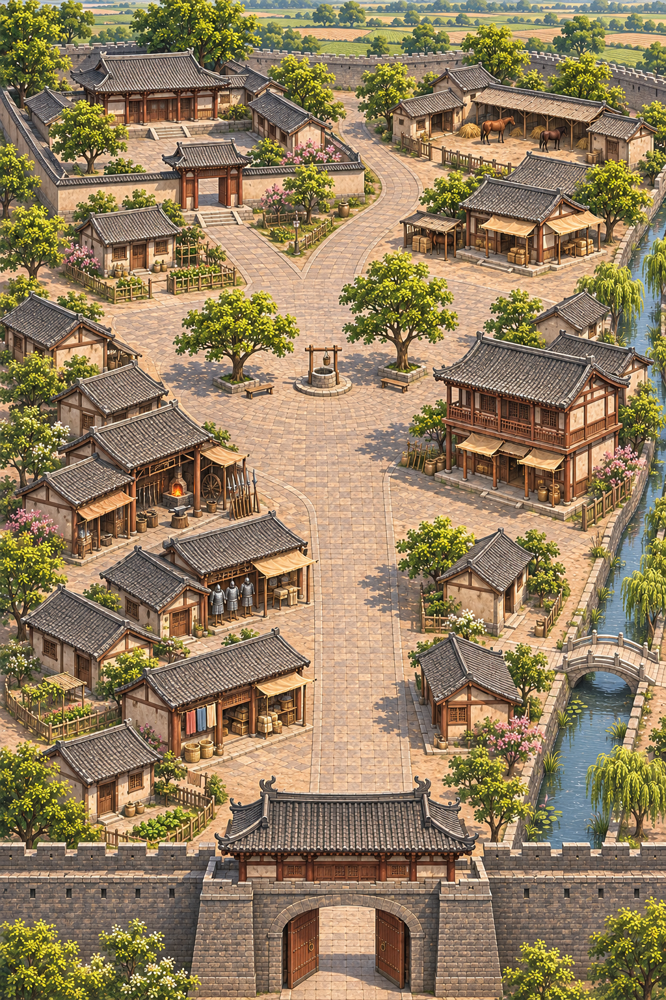
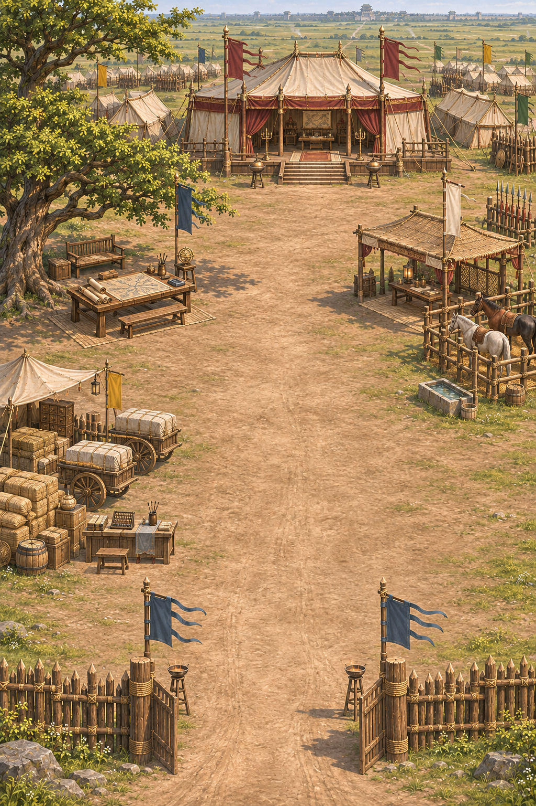

討董會盟・檄文再起
4-1 已接入。後續接應孫堅、汜水關與虎牢關仍為提案，尚未開放戰鬥。
出征與會合
- 完成黃巾烽火章，回徐州向陶謙完整覆命。再與陶謙交談，選「整備出發」。選「稍作休整」不推進。
- 完整聽完時間過場與軍令，徐州離開出口新增「任務：前往陳留」。中途暫收對話或重新開啟可繼續，未說完不發軍令。
- 先進陳留城內，找接待軍吏登記。說完後城門新增「任務：前往聯軍營地」。
- 營內依序找公孫瓚引見、曹操說明軍情、袁紹交付軍令。完整聽完袁紹對話才完成副章節。
- 到軍需吏處了解整備事宜，可返回陳留住宿、編隊。後續接應軍令尚未開放。
本段是承接黃巾章的遊戲改編過場，不表示黃巾平定後立即發生討董，也不把葛陂事件或天地人三公支線提前完成。
陳留

設縣衙、驛站、客棧、道具鋪、武器鋪、防具鋪、編輯所，另有井邊老者、布商。一般進城不需要軍令；接待軍吏只在收到軍令後出現。
客棧按編制收費：基本24金幣＋每人2金幣；無編制沿用20金幣。住宿恢復士氣。店鋪沿用現有服務，商品尚未上架。驛站沿用道路站數計價。大地圖不因任務捷徑增加跨城道路。
聯軍營地

公孫瓚位於右側接待棚、曹操在左側議事桌、袁紹在上方中軍帳，軍需吏位於左下。底部出口返回陳留。未登記不能進營。
獎勵與後續
完成4-1後，可到成就領取玩家碎片10片，僅可領一次。這次不贈送公孫瓚、曹操、袁紹卡，不算完成整個討董會盟章；章末二級寶箱留待章末實裝。
副章節紀錄 · 後續劇情提案新外景由內建 imagegen 製作，原始 PNG 與提示保留於「討董會盟場景來源.json」。共用室內沿用既有素材。